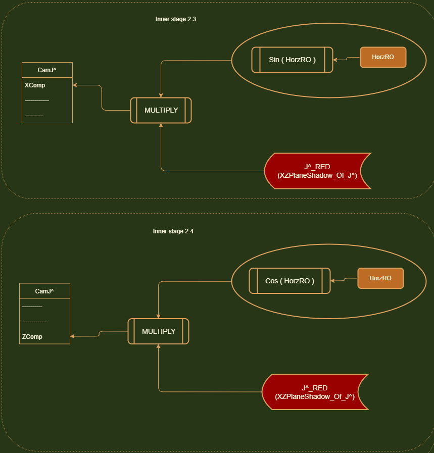

Ruff engine uses a 2 layer rotation system. Horizontal rotations and then vertical rotations. The order is important here. For
sake of being concise, I will shorten the word Horizontal to 'Horz' and Vertical to 'Vert'. HorzRO is the horizontal rotation orientation.
and VertRO is the vertical rotation orientation.
Usually in math, we are taught about rotation matrices for rotations on a particular axis. This gets complicated when we mix different rotations (on different axis) together.
Because when you rotate on one axis, and then rotate on another axis....you have to preserve your current orientation while you apply that new
rotation. It took me a long while to figure this out, but I have broken the entire camHats structure down into components and have developed a sequence that works!
For a detail description on how I derived this sequence, please check the functions expanded page (link).

Stage 1: Our first job is to orient Cam I^ with HorzRO. It turns out that in our current rotation system (Horz > Vert), The Y-component vector of Cam I^ never actually changes! It always is flat and parallel with the XZ Plane. No matter what Horz angle
you put the cam in, when you pitch up and down, this Y-Component of Cam I^ never moves.
So we do not have to ever touch it. It's always 0.
We have to orient the X-Component vector and Z-Component vector of Cam I^ with HorzRO.
As you can see in the diagram on the right, when we rotate Cam I^ with the assigned HorzRO, it rotates left and then you can track the displacement
on the X-axis and the Z-axis.
If we look at the HorzRO, we can see that the displacement on the X-axis is adjacent to the angle. So getting this X-Component vector is simply
Cos(HorzRO).
And The Z-axis displacement is opposite the HorzRO. So The Z-axis displacement is Sin(HorzRO). This has a negative polarity however because we are going
to the LEFT of the coordinate system (A left turn is considered a decrease in HorzRO and an right turn is considered an increase in HorzRO).

Stage 2: Our next step is operate on Cam J^. Things get a little tricky here. If you can visualize the CamHats rotating in all sorts of configurations of HorzRO and VertRO, you can see
how the X-Displacement and Z-Displacement of Cam J^ would be different based on how much you initially rotated the CamHats system in your HorzRO stage. For instance.
If you applied a 0 HorzRO, and then got to this stage where you simply pitched the CamHats up and down (Vert rotation)........Cam J^ would actually have no displacement on the X-axis. It would only displace
on the Y-axis and Z-axis. But if you applied a certain Horz rotation and then pitched up/down....you'd notice that there would be a displacement on the X and Z axis based on how much your Horz rotation was. If you tracked the tip of J^ moving
in a CamHats pitch up/down rotation...you'd notice that it follows an angled path. And this path depends on how much you initially rotated Horz.

If you look at the diagram below, you'll notice I've highlighted this path's shadow(projection) on the XZ Plane as a red
line. Notice that this red line
has a X-axis displacement and Z-axis displacement (it's component vectors). This red line represents how much distance
Cam J ^ has covered on the XZ plane when it starts to move away from the origin [0, 0, 0] during a pitch up/down
movement.
It's easy to see that the length of this red line would depend only on the VertRO. It's bearing however (which direction
it moves in) would be influenced by the HorzRO. Notice how Cam J^ is sitting at
the end of this red line.
If we can find this red line, we can get the X-axis and Z-axis displacements of Cam J^.
But how do we get this red line's length? We don't have a clear angle.

I guess since there is 90 degree angle between Cam J^(in its identity location),
we could subtract VertRO from 90.
Or a better approach would be to simply shift that red line UP! Just shift it up so that it becomes directly opposite
VertRO. Then we can get the length of the red line
with Sin(VertRO).
Now you might notice the yellow line I've drawn. This is the Y-axis displacement of Cam J^. Turns out that this does not
depend on the HorzRO. This ONLY depends on the VertRO.
No matter what HorzRO angle the CamHats system is placed in, this projection of Cam J^ on the Y-axis does not change and
it only gets affected by the VertRO.
So we can first orient the Y-axis component vector Cam J^ with the VertRO.
Once we get the length of the red line, we can use it in conjunction with the HorzRO to get the X-axis and Z-axis
displacements of Cam J^.
Notice how if HorzRO was 0, the red line would not follow any angled path. It would just move parallel to the Z-axis and
follow that. And if HorzRO was Pi/2 radians (90 degrees), it would be parallel with the X-axis.
Therefore we can consider HorzRO to use in conjunction with the red line.
Sin(HorzRO) = XDisp(X-axis displacement) / Red line.
So the X-axis displacement is: Sin(HorzRO) x Red Line.
Likewise, the Z-axis displacement is Cos(HorzRO) x Red Line.